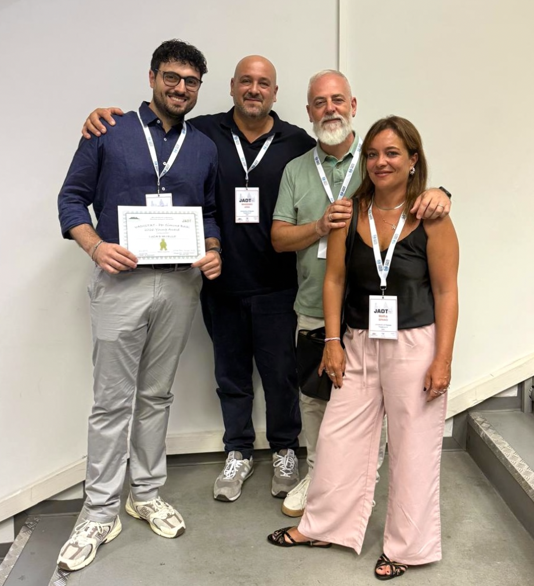
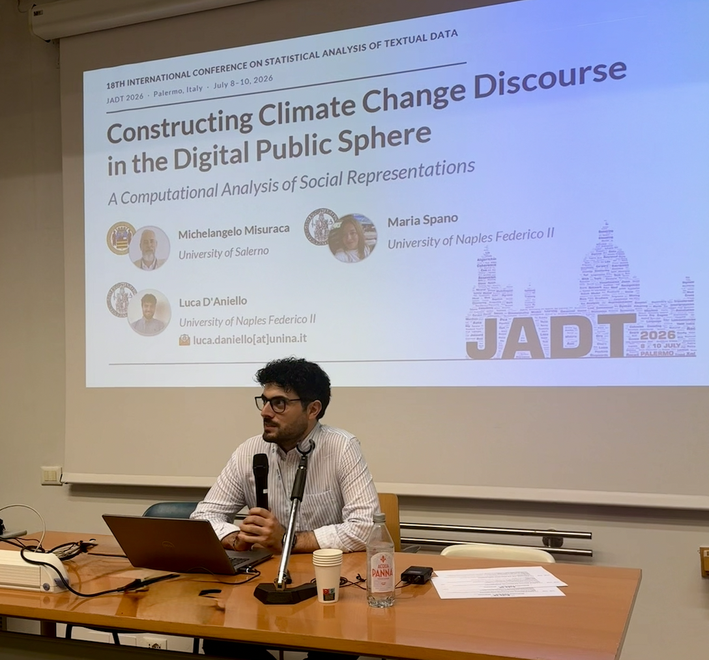

The 18th International Conference on Statistical Analysis of Textual Data, JADT 2026, has just wrapped up in Palermo. This was my third time at this conference, but the first in a different role, and, above all, the moment I received the VADISTAT – Per Simona Balbi Young Award for the contribution "Constructing Climate Change Discourse in the Digital Public Sphere: A Computational Analysis of Social Representations."

Why this recognition means a lot
This award is meaningful to me for two reasons. First, it rewards a methodological piece of work built around Social Representation Theory, a topic that ties together several threads central to this conference. Second, the award carries the name of Prof. Simona Balbi, a reference figure in the department I work in, and honours her research in textual data analysis.

A heartfelt thanks to the JADT scientific committee and the VADISTAT jury for their trust, and to the people who made this award possible: my mentor Massimo Aria, Michelangelo Misuraca, and Maria Spano.
See you in Nice, for JADT 2028.